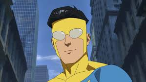
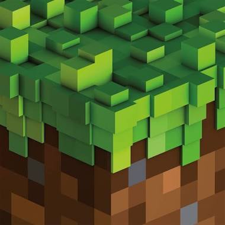

Mijn Naam is Tom Kirkels, ik ben in 2012 geboren en alles wat in deze Website staat vind ik leuk om te doen of is belangrijk voor mij.
Scratch is een kinder programmeertaal die geschikt is voor alle leeftijden/Turbowarp is een uitgebreide versie van Scratch die meer aan kan Scratch .Scratch3.0 | Turbowarp
KirkelsTV is mijn vader zijn oude youtube kanaal.YT Kanaal.

Ik vind programmeren heel leuk(Daarom heb ik ook deze Website gebouwd.)
Dus hier zijn de links naar boeken die je kan gebruiken als je ook geïnteresseerd bent in programmeren(Voor als je HTML of Python nog niet kent):


Ik vind Invincible een hele goeie Serie en Comics dus behoort het in deze Website.
Hier is een link voor mijn Invincible Website:

Ik vind Minecraft heel leuk, want je kan alles doen wat je verzint zolang het maar in blokken gebouwd kan worden.
Ik heb zelf Minecraft ontdekt toen ik 6 jaar oud was en ik vond het al gelijk interessant.
Dus als je het wilt uit proberen dan is hier Minecraft v1.8.8: Minecraft v1.8.8
Hier is de link naar de Minecraft Website:
Minecraft Website
Ik houd van Minecraft muziek en alle soorten muziek, dus hier is een link naar mijn Spotify playlist van Minecraft:
Minecraft Playlist
Dat was mijn Website. Ik hoop dat je het interessant vond, Doei!